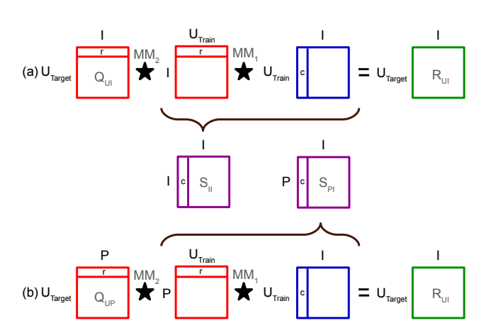
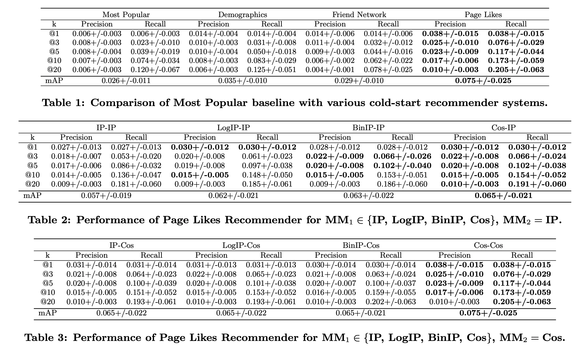

RecSys14-Social Collaborative Filtering for Cold-start
前言
最近一直忙的不可开交，很久都没怎么写博客了，最初的周更也变成了月更。。。打算最近不管有多忙，我也要保证每周日之前写一篇博客，同时把之前落下的文章补上。最近一直在看推荐系统和冷启动的文章，那么今天就分享一个最简单的社交网络做推荐的文章吧！同时本文也将介绍一下冷启动问题，以及本文特别简单的解决方案。
Abstract
冷启动问题是推荐系统中一个常见的问题，其所面临的场景主要为，一个购物网站对尚未购买过任何item的user做推荐，这类user，被称为cold user，反之，有交互记录的则称为warm user。对于cold user，我们没有其购买信息，但是我们有他的一些side information，可以理解为年龄，工作，居住地之类的。本文提供了cold-user的社交网络。换句话说，对于淘宝的cold user，我们有其在微信的好友列表，其好友是有在淘宝买过东西的。此时我们可以利用其好友的购买记录对其做推荐。这种方式也被称为neighborhood-based的冷启动推荐方法。
Introduction
网站初期会严重受到冷启动问题的困扰，解决冷启动问题是十分迫切的，同时也是推荐系统中一个重要的问题。
但是传统的推荐方法，都是基于协同过滤的，也就是collaborative filtering-based，其思想是为每一个user和item都学习一个feature。这种方式确实在有用户的购买记录的话，有着不错的效果，但是当用户没有购买记录的时候，则无法进行推荐。Content-based和User-based的方式都是基于User和item的side information进行推荐的，但是这类信息通常不完全，导致这种方法的结果十分粗糙，而且不能进行个性化的多样性的推荐，这实际上，是一个问题。通常这类方法，只比item popular的方法好一点点。
最近的工作，有一些工作是通过社交网络扩展协同过滤方法，通过warm user去学习社交网络和购买记录的联系。甚至有一些工作通过通过社交网络对cold item进行推荐。本文，提出了一种基于社交网络对冷启动用户推荐商品的方法。经过实验验证，有着不错的效果。

Item-based Recommendation
我们可以看到上面的$a$图，这一部分就是item-based推荐的方法，其中$Q_{UI}$表示的是target user对item的一些交互记录(这里不能是冷启动的user)，同时对于$i \in I$，表示的就是每一个物品$i$。$u \in U_{target}$，表示的就是每一个要推荐的用户。
本文使用$U_train$对$I$的交互信息，希望学习到$S_{II}$矩阵，这部分信息$s_{ij}$表示的就是物品$i$和物品$j$的相似度。最后使用其中上图中的$Q_{U I} \star S_{I I}$得到推荐结果，其中$\star$表示eralized matrix multiplication。最后得到的结果就是对$U_{target}$用户的推荐结果。
$\star$有下面的几种形式：
- $IP$ 内积形式
- $BinIP$，01形式
$LogIP$，logstic内积形式
$Cos$，cosine相似度的形式
Social network cold-start recommendation
参照上图的$a$部分，我们可以把$S_{II}$进行一个替换，这里item-based的方法是求了一个item之间的相似度，那么是不是可以构造一个社交网络$P$和$I$之间的相似度呢？这样的话，就可以对冷启动用户进行推荐了。于是相似的，本文构造了$S_{PI}$矩阵用来求，社交网络的特征$p$和$i$之间的相似度，这里的$p \in P = {p_1,..,p_l}$。其中$p_i$表示的是当前的用户和第$i$个人是不是朋友关系等，后面实验中会再提到。
之后采用和item-based的方法一样进行优化就好了。
Experiment

其中使用的数据集是Kobo公司的数据集，第一个表的列表示的是提供不同的side information的话，效果如何。
Most popular
这个是baseline，表示的是对每个用户推荐相同的item
Demographics
这个表示的是提供用户的年龄，性别等作为$P$进行冷启动推荐的效果
Friends
这个表示的是$P$是社交网络
Page Likes
这个表示的是$P$是用户在FACEBOOK中喜欢的页面特征
后面两个表表示的是$\star$操作的组合，对结果的影响。